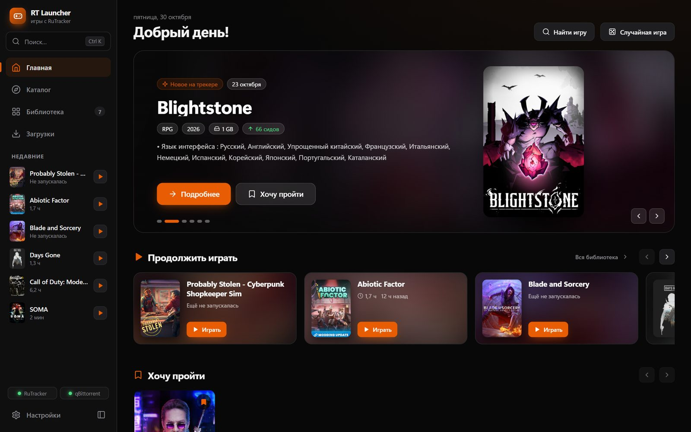
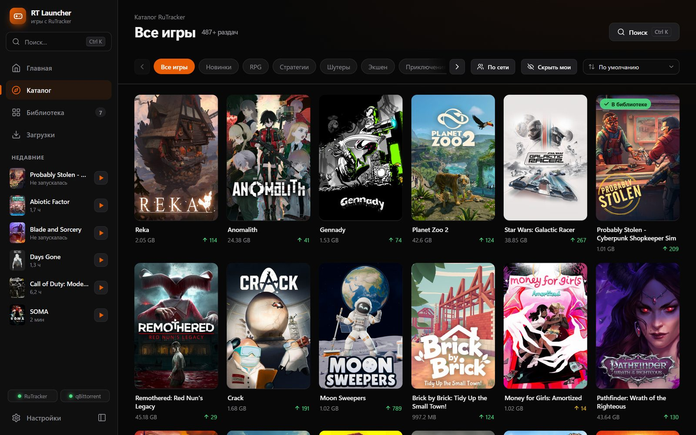

Все игры RuTracker — в одном лаунчере
Каталог раздач с обложками и скриншотами, загрузка в один клик, автоматическая установка и библиотека с запуском игр — как в Steam, только для RuTracker.

Зачем нужен RT Launcher
RuTracker — огромная библиотека игр, но искать раздачи, качать торренты, распаковывать и запускать их вручную долго. Лаунчер делает всё это сам.
Каталог и поиск
Все игровые разделы RuTracker с обложками, жанрами, сидами и размером. Поиск по первым буквам, подсказки, сортировка.
Страница игры как в Steam
Скриншоты из Steam, описание, системные требования и проверка: потянет ли ваш компьютер и хватит ли места на диске.
Загрузка в один клик
Лаунчер сам ставит и настраивает qBittorrent, добавляет раздачу и показывает скорость, прогресс и время до конца.
Автоматическая установка
Архивы (в том числе многотомные и ISO) распаковываются, установщики запускаются в нужную папку, файл запуска находится сам.
Библиотека и запуск
Все игры в одном месте: кнопка «Играть», время в игре, последний запуск, избранное и свой порядок перетаскиванием.
Достижения
Названия и иконки достижений из Steam, процент игроков и всплывающее уведомление поверх игры, когда вы его получили.
Обновления игр
Вышла новая версия раздачи — лаунчер предложит обновить игру и сам скачает и установит её поверх.
Игры по сети
Отдельный раздел с играми для совместной игры: лаунчер ставит игру и нужные файлы для сетевой игры автоматически.
Поделиться игрой
Отправьте другу ссылку — у него игра откроется прямо в лаунчере. Темы оформления, горячие клавиши и быстрый поиск Ctrl+K.
Три шага — и можно играть
При первом запуске лаунчер сам проведёт по настройке.
Установите лаунчер
Скачайте установщик и запустите его. Права администратора не нужны, дальше лаунчер обновляется сам.
Выберите папку и войдите
Укажите диск для игр и войдите в свой аккаунт RuTracker — регистрация на сайте бесплатная.
Подключите qBittorrent
Одна кнопка: лаунчер сам установит и настроит qBittorrent. Выбирайте игру и нажимайте «Скачать».
Как это выглядит

Что нужно
- Windows 10 или 11, 64 битОкно работает через WebView2; если его нет — откроется в Chrome или Edge.
- Аккаунт RuTrackerБез входа RuTracker не даёт скачивать раздачи. Регистрация бесплатная.
- qBittorrentНе установлен — лаунчер поставит и настроит его сам.
- Около 100 МБдля самого лаунчера, плюс место под игры.
Частые вопросы
Это бесплатно?
Да, полностью. Лаунчер не продаёт игры и не показывает рекламу.
Антивирус ругается на игру — это нормально?
Защитник Windows иногда удаляет файлы из раздач. Лаунчер проверит установку и предупредит, если файлов не хватает.
RuTracker не открывается — что делать?
Лаунчер сам пробует обойти блокировку провайдера и поддерживает зеркала. Если не помогает — включите VPN.
Как обновить лаунчер?
Он проверяет обновления при запуске и ставит их сам, настройки и библиотека сохраняются.
Как удалить?
Через «Параметры → Приложения» Windows, как любую программу. Установленные игры остаются на диске.
Хочешь помочь проекту?
Нашёл ошибку — расскажи о ней. Это займёт пару минут, а исправление получат все.
Сообщить об ошибке- Выбери, что сломалось — интерфейс, загрузка, установка, запуск игры, достижения…
- Опиши проблему — что делал, что ожидал и что произошло. Почта подставится сама при входе через Google.
- Прикрепи лог (по желанию) — файл
launcher.logочень помогает найти причину.
launcher.log: установленная версия — нажми Win+R и вставь %LOCALAPPDATA%\Programs\RTLauncher; портативная — папка с RTLauncher.exe. Или в лаунчере: Настройки → «Сообщить об ошибке» → «Показать файл лога».Нравится лаунчер? Поддержите разработку
RT Launcher бесплатный и без рекламы. Если он вам пригодился, можно отправить любую сумму в USDT — это помогает развивать проект.
TBZMKUMMzRStEPUJvrXhTxWrHhe4Mpd8w4
Отправляйте только USDT в сети TRON (TRC-20) — переводы из других сетей (ERC-20, BEP-20 и т. д.) на этот адрес не дойдут.